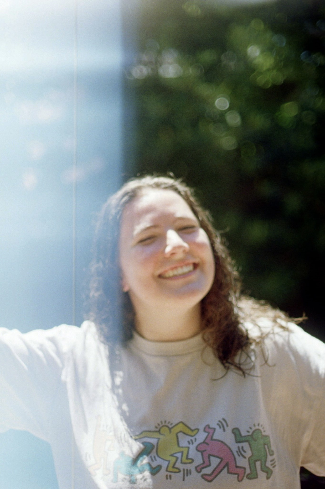
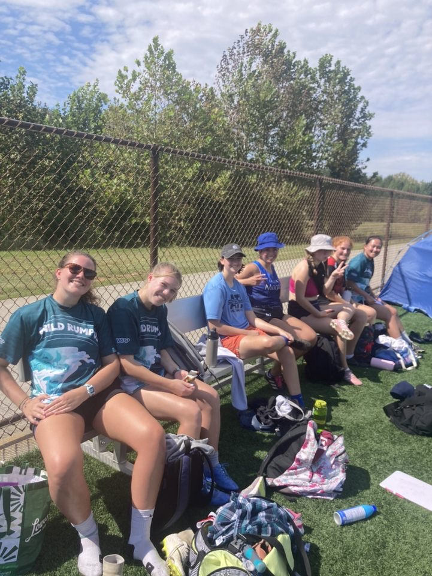

Hello my name is Lauren Dathe. I was born and raised in Reno, Nevada. I am currently 19 years old and I have an older who is 22.
Growing up my dad was the stay at home parent to I enjoyed spening time with him and helping him with various tasks around the house.
I am very much an extrovert so spedning time with friends is my favorite thing to do along with watching movies and televsion shows.
That interest caused a my discovery for love film production that happened my senior year of highschool.
When applying for college I wanted a school where I could study film and tv production so I could make it my career.
That is how I came across Elon. I applied, got in, and now I'm here majoring in Cinema and Television Arts and minoring in Photography.
Moving across the country was difficult but I am glad I did it because I have never spent
time on the East coast and now I only interact with people from here. I do plan to move to California
after I graduate because I have always loved it there and wanted to live there. But for now I am
happy at Elon and in North Carolina.
I played soccer all my life but switched those field skills to Ultimate Frisbee when I came to college.
I am currently vice president of the Elon Women's Ultimate Frisbee Team and hope to work my way up to
captain or president in the next 2 years here.
